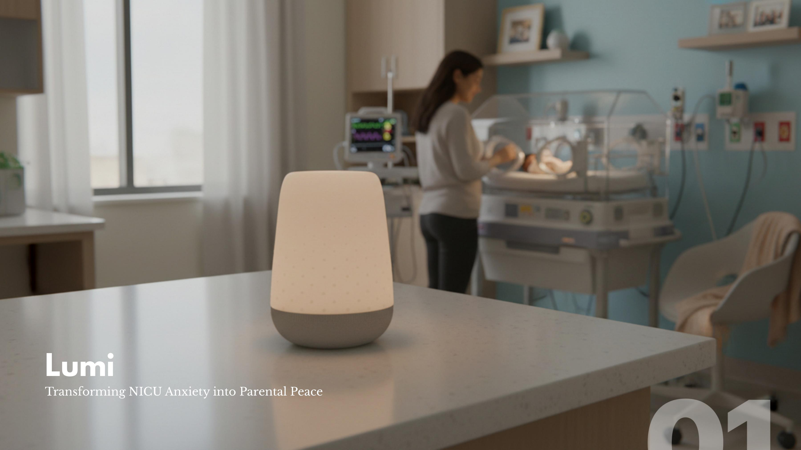

Transforming NICU anxiety into parental peace.

NICU stays take a measurable toll on parents' mental health: 50% of NICU mothers experience postpartum depression, compared to 15% of mothers with full-term infants, and 25% of NICU mothers go on to develop PTSD — especially when their baby's condition is more critical. The NICU soundscape itself is a primary trauma source, and with 31% of NICU infants cared for in understaffed conditions, nurses identify staffing as the number one barrier to providing emotional support to mothers.
Lumi is a soft, ambient lamp and companion app designed to sit inside that gap — offering calm, reassurance, and a sense of connection without adding to the clinical noise of the NICU.
Research into the NICU mental health crisis and staffing gaps set the emotional brief, while a moodboard established a soft, approachable visual direction — gentle in color, material, and form, but still clean enough to belong in a medical setting. From there, interface sketches mapped the companion app's onboarding and daily-highlights flow, lamp ideation explored dozens of forms, and pattern exploration tied the lamp's surface texture back to soundwave and ripple imagery.
When stationary, Lumi stays a dim, ambient color to elicit calmness. It shifts color depending on the type of new information a mother receives through the app — amber as a calm baseline, classic blue for non-urgent updates, forest green for a new milestone, and lavender as a cue that it's time to feed baby and do skin-to-skin contact. The mother sees the color change first, processes it, then checks her phone for the detail — a softer, more ambient way of staying connected to her baby's care.